Ducts
and
Cavities
Principles
Displaying ducts
Occluding ducts
Disobliteration
Repair
Anastomosis
Principles
The body has a variety of ducts.
- many have peristaltic action.
- others have insufficient muscle and transmit contents 'vis a
tergo' (force from behind).
Passage is controlled by circular muscle sphincters
- eg the pylorus (pule = gate, ouros = watcher)
Ducts are prone to injury, stenosis, obstruction.
They require intubation, dilation, drainage, repair and anastomosis.
Displaying Ducts
Techniques include:
1. Placing forceps superficial and cutting between open arms.
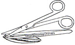
2. Opening haemostats parallel to it.
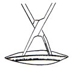
3. Opening haemostats at right angles to it.
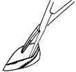
Occluding Ducts
1. Diathermy under compression
- creates a weld, but is not safe and secure at all.
2. When sterilising vas / where need for caref that channel does not
reform:
- cut ends at a distance
- double ligate
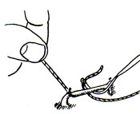
- can even fold the ends back on themselves before the second
ligature is applied.
3. Ligating is effective but do not tie too tight.
- tie away from end so it doesn't slip off during peristalsis.
- if spillage possible, apply double ligatures before transection.
- transfixion suture-ligature is safer.
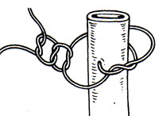
4. For larger tubes, close with a continuous row of sutures:
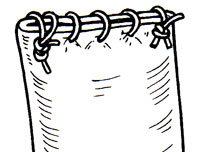
- and for security, reinforce by invaginating with a second layer of
sutures.
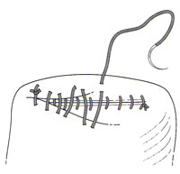
Use sutures instead of clips where possible.
- they are more versitile, less likely to catch and be dragged off.
Disobliteration
1. Beside stents / dilations / lumen-clearing procedures, there are
operative means.
- do not immediately open a blocked duct; try to massage it clear
first generally.
- then remove the cause / carefully repair the defect.
2. Can perform a plastic (plassein = to form) procedure to widen a
narrow segment.
- eg pyloroplasty / stricturoplasty.
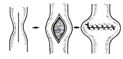
3. It may be preferrable to excise the narrowing.
- the circumferential line may narrow the lumen
- this can be minimised by cutting diagnoally to produce a longer
oblique line.
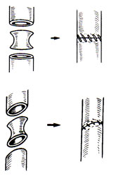
4. Immovable or recurrent obstruction requires new methods.
- bypass may be achieved
withoud transecting the duct as in (2) below or to a stoma (3).
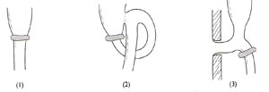
- alternatively, the duct may be transected, and the distal end
drawn up above (2).
- differentiate between a conduit duct and a secretory duct; allow
secretions to drain (3 and 4)
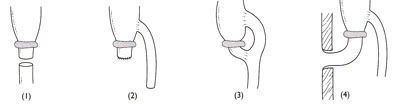
- alternatively transect above the blocked duct and bring out as a
stoma
- to avoid the secreting remnant obstructing / becoming closed off,
can create a double stoma.
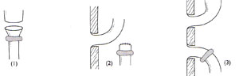
Repair
Aim for technical perfection,
avoid tension, ensure adequate blood supply.
1. In bowel injury, mucosa tends to evert (because there is more of
it than the outer layers).
- want to invert with a Connell stitch.
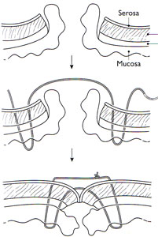
2. Cf chronic ulceration / inflammatory breaches do not have
protruding mucosa.
- can usually use simply all-coats sutures
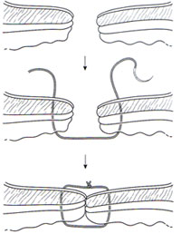
3. Repairing smaller-calibre tubes may result in stricture.
- often better to re-anastomose or anastomose to a large duct such
as bowel.
- remember blood supplies to thin ducts are tenuous; do not free
excessively.
Anastomosis
"Coming together through a mouth" (Galen).
Rules
1. Adequate blood supply and venous drainage.
2. Disease-free ends.
3. No distal obstruction.
4. Obey any inherent directional peristalsis.
5. No tension, no twisting, no contraction.
6. Avoid back pressure /stagnation.
Bowel
Stitch. Only staple where there is clear benefit.
Use non-toothed forceps.
Set up very neatly before you start.
Ensure you are in the best position / side of the table etc.
Clear unnecessaries.
Gather all necessary equipment to hand.
Go methodically and efficiently.
Carefully ligate bleeding vessels before anastomosing.
1. Ensure bowel ends match. If they don't cut back narrower angling
out at antimesenteric side.
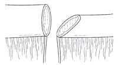
2. Apply non-crushing bowel clamps to prevent leakage.
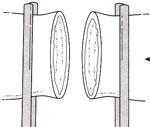
- or use traction sutures as so
- if the bowel cannot be rotated, insert these not at edges but
slightly to back wall, so back wall stitches can be easily inserted
while front left slack.
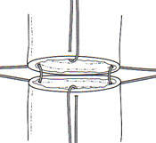
3. Your stitch depends on your beliefs.
- fashions change, training moulds the surgeon.
- no satisfactory controlled trials exist on the popular methods.
- strongest / most important layer is the submucous collagenous coat
(this is from where catgut is made).
The traditional stitch
After Halstead.
Takes all layers.
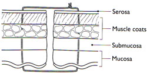
Currently popular is the extramucosal / serosubmucosal technique.
- here the mucosa (only) is not included.
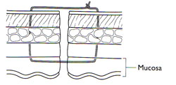
The seromuscular-layer stitch seals the serous layers
- is useful as a second layer stitch, but does not include the submucosa so is weak.
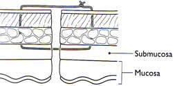
4. Use a synthetic absorbable 3/0 thread. Smooth. Monofilament (eg
maxon).
- no interstices where organisms can hide.
- though a little stiff to tie.
- multifilament thread is more supple, and some use it for an outer
seromuscular layer.
5. The anastomotic line may lie in sagittal or coronal planes.
- easier to sew from far to near when it lies in the coronal plane,
non to dominant in the sagittal plane.
6. Oppose the edges perfectly, same width, edge to edge.
- stitches cause inflammation, causing oedema, if pulled too tight,
they will cut off the blood supply.
7. Ensure the lumen is patent.
Styles for bowel
Mobile bowel, edge-to-edge, single layer, interrupted stitches.
Insert stay sutures at the edges, hold with clips.
Insert sutures joining anterior walls only.
Tie knots external.
Turn bowel by passing clips under/over so back wall now front.
Sew this closed.
Check mesenteric and antimesenteric edges; most defects here; sew
extras if necessary.
Cut stay sutures.
Close mesentery.
- but don't mess with the blood supply to the anastomosis.
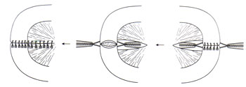
Edge to edge, single layer,
continuous stitches.
Start on back wall.
Insert a stitch from outside in on one end.
Pass through to other side and tie.
Clip short end.
Insert needle back through into lumen
Pass continuous unlocked spiral stitches joining back walls to other
end.
If the anastomosis lies in the sagittal plane:
- start at the near end
- complete stitctching of back wall.
- continue around far corner to close anterior wall from far to near
to reach starting point.
- when the spiral stitch is continued around to the front, you will
find the need to stitch from left to right (upside down; awkward).
- avoid this via a single Connell
stitch:
- at edge, after passing in, reverse needle and pass it back
out forming a loop on the mucosa(see pic below)
- now stitch on, in a better position.
If the anastomosis lies in the transverse (coronal) plane:
- start at the right end
- insert first stitch from without in, then from within out and tie,
clamp short end.
- reinsert needle from without in on near side, carry on with
continuous spiral sutures.
- at left end, reverse needle, create a single Connell stitch again,
coming out on near side.
- now continue on anterior line from left to right.
At the finish, cut off the needle, and tie the free end to the
clamped short end.
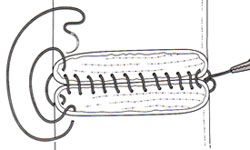
Fixed bowel, single layer,
interrupted sutures.
Particularly pertinent for large bowel to anastomoses with rectum.
- rectum lies against sacrum, and cannot easily be rotated.
- useful here also where space is limited.
Do not unite bowel under tension.
Take particular care with sutures as they cannot be revisited once
the back wall is placed and you have moved on.
Unite posterior layers with careful all-coats sutures, knots tied
within lumen.
If bowel is fixed and subsequen access restricted, place with bowel
ends apart, clipping bt not tying until all are inserted.
- this is the 'parachute technique'.
Leave outer ligature ends long for present but cut ligature ends of
the remainder (knot inside lumen).
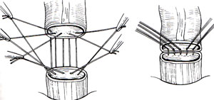
Many colorectal surgeons use inverting mattress sutures for the back
wall.
Insert anterior stitches to complete (simple or inverting).
The rectum will carry rigid faeces: check the integrity of what you
have done:
- insert a finger through anus to feel it.
- examine with a sigmoidoscope
- fill pelvis with sterile fluid and inflate stump, should have no
air bubbles.
Two-layered anastomoses
Formerly done routinely and satisfactorily.
Most surgeons now do single layer techniques.
Some still do an outer seromuscular Lembert stitch; this is
satisfactory.
Variations
End to side, side to side anastomoses.
Stapling.
- do not assume they are simpler / faster.
- they require extra caution.
Biliary duct anastomoses
Bile ducts transmite passively.
If injured, often require uniting to another conduit such as
jejunum.
Bile is penetrating and leaks from an imperfect anastomosis.
- use fine needle and thread.
Often bile ducts will create an annular constriction ring if
anastomosed end-to-end.
Prefer a T-tube to splint the union.
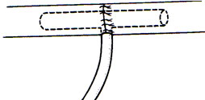
If access is difficult, place stitches so that ducts lie apart, and
slide down (parachute).
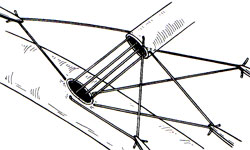
May slit a small duct to join it to a similar duct that is also
slit.
- or a wider duct
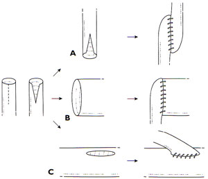